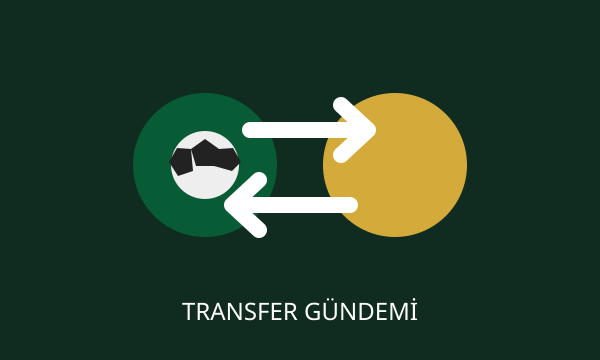

Haftalık üç transfer dönemi başlıyor
Beşinci haftadan itibaren planlama hatalarının bedeli çok daha ağır olacak.

FUTMAC özel dosyası · Temsilî görsel
FUTMAC haber merkezinin hazırladığı bu dosyada yeni sezonun öne çıkan ayrıntılarını bir araya getirdik. Resmî uygulamalar için lig yönetiminin duyuruları ve mevzuat metni esas alınır.
Üç hamleyi doğru sırala
Sınır uygulamanın sunduğu sınırsız değişiklik imkânından bağımsız. Teknik direktörlerin sakatlık, fikstür ve form risklerini aynı plan içinde değerlendirmesi gerekecek.
İhlalin yaptırımı ağır
Haftalık sınırın aşılması halinde 300 fantazi puanı siliniyor. Ayrıntılı ve bağlayıcı hükümler için resmî mevzuat esas alınmalı.
Her hafta yeni bir maç; her karar puan tablosunda yeni bir ihtimal.
Ayrıntılı bilgi
Lig sistemi ve özel uygulamalar için mevzuat sayfasını inceleyin.
MEVZUATI AÇ » Derbi puanları
Derbi puanları Sezon ödülleri
Sezon ödülleri